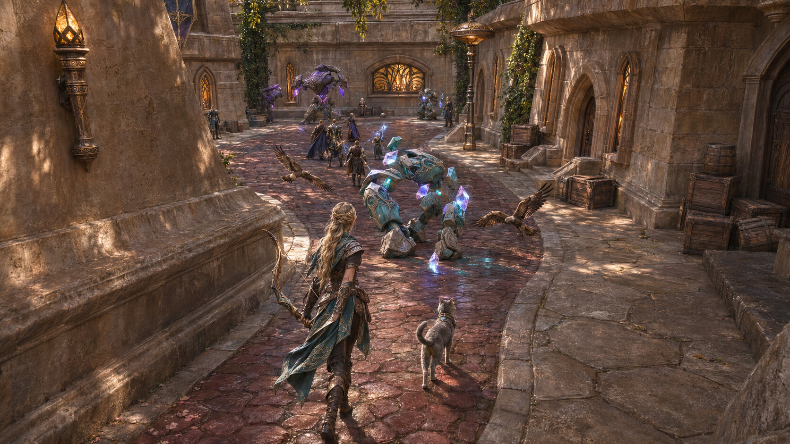

Yesterday I carried a letter to the library in Ironforge. This morning I learned how far a letter can send you. Mae Foxsong and I were out among the Syndicate thieves and mountain lions before breakfast. We compared notes on cats, finished the work between us, and parted with thanks. By the time I handed in Stormpike’s business, there was already talk of a Dark Council. The dwarves have a way of making a finished errand feel like the first page of a longer letter.
Southshore smelled of fish and cookfires. I chased down Farren’s proof in three installments and brought in enough turtle meat for the bisque. At Refuge Pointe I took time to work on Bite. The old stone there makes a respectable windbreak, though I still look up first when the wind changes. Later, along Lordamere Lake, I spent so long in the shallows with those slow turtles that it felt absurd to reach my thirty-third level there. Sylthara, who had walked every yard of it with me, found nothing remarkable in that at all.
Beneath the city
I knew Dalaran from above. Its mages had helped open a safe skycutter crossing from Zephras, and the city was among the first places I saw after leaving the isle. Coming to its sewer gate with my bow and Sylthara gave me a rather different view. Above us the Kirin Tor were still rebuilding. Below, we could hear the city’s trouble for ourselves.
Ruby Sanguinar was already outside the gate. Geradin Copperbottom was flying in, Gideon Silversky answered the call, and Lazaro Cortez rounded out our five. While we waited, I offered Ruby a place at my camp. I had crossed half the world for that sleeping bag and was pleased to get some use out of it in company. There was trouble at the entrance before we all got inside. Ruby asked where the graveyard was, and I told her Southshore. It is a long way back when you can see the door you meant to go through.
Atrexis the Grave Knight met us in the Underbelly. Gideon took the front, and I learned quickly how hard it was to find room to draw my bow. Once Atrexis fell, we stopped for breath and water. A little farther in, Gideon suggested taking the next stretch one creature at a time. That suited me. Sylthara could slip past a shoulder and find her mark where I still needed to find a clear line.
The Arcane Anomaly went down. The Mana Elemental, which the Kirin Tor called the Arcanic Enigma, silenced Geradin in the middle of the fight. Then the Unstable Sentinel had Gideon calling for us to concentrate on the thing itself. In the streets, the constructs looked as though someone had fitted colored glass into armor and taught the pieces to walk. I kept an eye on where the loose pieces moved.
The Shade of the Archmage threw an arcane bolt my way before I had even settled my aim. Gideon met it with the Light, Ruby closed with her blades, and Sylthara got a claw into it before the first arcane blast rolled out around us. I marked it and called a hawk. For a few moments there were wings above the fight, which helped me remember to look past all that light and see where everybody stood. We went on to bring down the Fel Ancient and the Mana Devourer. By the time I could turn in Heart of Disruption, the Kirin Tor had a new name for me: Defender of Dalaran. They also had another errand.
Back through the gate
Kimloc Noharpian, Astrid Embermoon, Lysinna Lightfall and Dark Dawnstone made up the second company. Dark brought a cat and called hawks of his own. Our first stretch went faster, right up to the moment the Fallen Mages found Sylthara. Frostbolt after frostbolt struck her. The last one put her down.
I remember the short wait while I coaxed her back better than I remember killing Atrexis a second time. When she stood again, I could hear her breathing beneath the noise of the street. I stayed close while she got her feet under her. Later, when we had to start over twice against the Shade, I was glad to have her beside me for the third approach. We put it down and finished with the Unstable Sentinel. Among the arched windows and stacked crates of the Magus Commerce Exchange, there were two cats and hawks enough to make the place feel almost open to the sky.
I took the remaining work back to the Kirin Tor. They accepted the arcane fragments and the green sample, and I left with an infused rod, a pair of runebound gloves, and the Kirin Tor’s thanks. I thought about the mages waiting for us when we first came down from Zephras. I had wondered then what I could possibly do for people who knew how to hold a city behind a dome. Today there had been work for a hunter, and a place for her cat.
There was still road enough for Desolace, where the wind had an old, dry sound among the bones and the stone at Nijel’s Point. I took up two requests there. Later, in Dustwallow, I took a request for mudrock soup and spent some time fishing. I liked watching one small thing move on the water after a day of trying to watch everything at once. I handed in my reassignment afterward. Then Sylthara and I went home to Goldshire. I set my bow down and left the rest of the papers for morning.